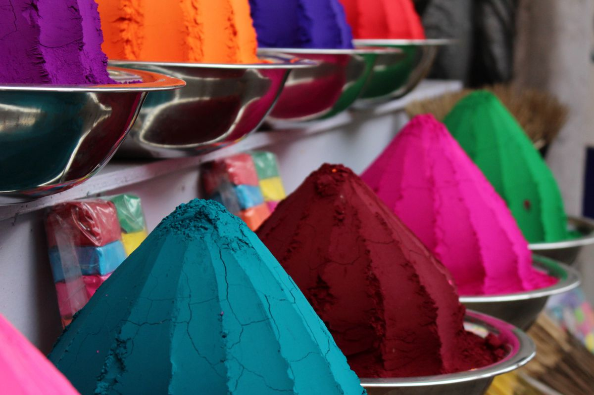
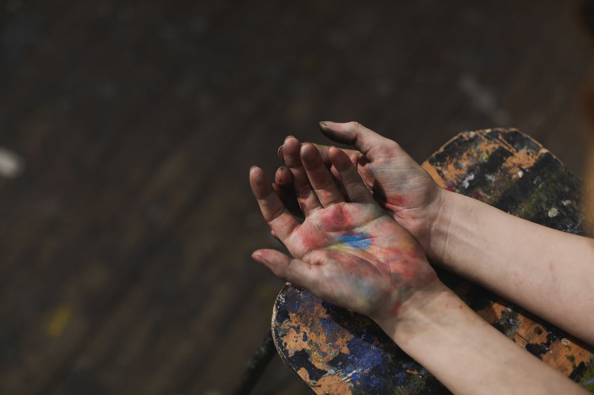
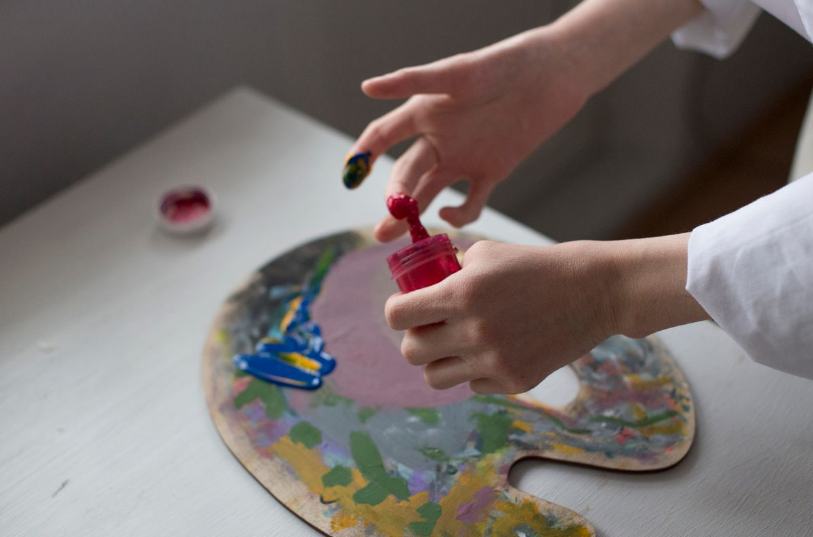
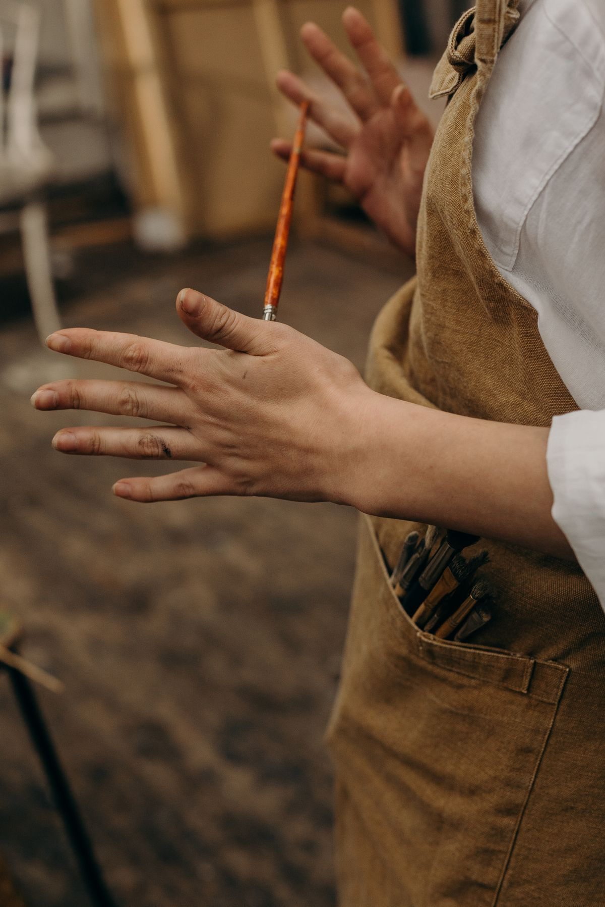

My grandmother painted the wall. I learned by watching the corner she left for me.
In Mithila, a girl learned painting the way she learned cooking — standing close, being handed the small jobs first. I ground pigment, washed brushes, and filled in borders on my grandmother's kohbar walls in our village outside Madhubani town. At nine she let me paint one fish in the corner of a wedding wall. I have been painting in other people's corners, and then in the middle of the wall, ever since.
Today I work from a courtyard studio in Madhubani town. The work is the same work: wedding walls in the season, festival panels through the year, and commissions that travel — a tree of life to Pune, a pair of fish to a flat in Delhi. What has changed is only the paper. It travels better than a wall does.

Two ways of working: bharni and kachni
Every Madhubani painting is one of these two, or the two married together. The difference is the first question I ask on any commission, because it changes both the look and the days.
The outline is drawn first, then the shapes are filled with flat colour, the way a field is flooded. Bharni is bold from across a room. It is the style of most wedding walls, where the painting must speak to a whole courtyard.
No fill at all. The whole picture is built from fine black lines and close hatching, so the shading is patience, measured in lines. Kachni rewards a close look and takes the longest — it is priced for that on the rate card.
The colours, and where they come from
Six colours do all the work. Each is ground in the studio and mixed with babool gum so it holds to paper, cloth or a lime-washed wall.
| Colour | Source | How it is prepared |
|---|---|---|
| Black | Lampblack — soot from a mustard-oil lamp | Soot scraped from a brass plate held over the flame, ground with gum |
| Yellow | Turmeric root; yellow ochre earth for walls | Root pounded, sieved twice, mixed fresh — turmeric fades if it is stored wet |
| Red | Kusum flower and madder root | Soaked, boiled down, and ground to a paste; kumkum for small ritual marks |
| Blue | Indigo | Leaf indigo worked into a vat; the colour deepens with each dipping of the pen |
| Green | Crushed leaves; indigo laid over turmeric | Leaf juice for soft greens, the layered mix for the deep green of a peacock's neck |
| White | Rice paste; conch-shell powder on walls | Rice soaked overnight and ground on stone to a smooth cream |
The paper is handmade cotton-rag paper, sized with a thin gum wash so the line sits on the surface instead of drinking in. Cloth is plain cotton, washed, starched lightly and stretched on a frame. Walls are prepared the old way — a wash of mud and cow dung, dried, then a coat of lime — and a wall painting is planned around the weather, because a damp week will undo a dry day's work.
The pen is a kalam cut from bamboo, its nib split and trimmed by hand; one pen is cut for outlines, a finer one for kachni hatching. For the broad washes inside a bharni fill, a small brush does the carrying and the pen still draws every edge.



The year's festivals
- Madhushravani (the rainy month of Shravan) — fifteen days when newly married women gather to hear the story of the snake goddess, and the panels of her story are painted fresh each year. This is my busiest painting season after the weddings.
- Jitiya — mothers fast and pray for the long life of their children; fish and the jimutavahana story are painted on paper and cloth for the puja room.
- The wedding months — the kohbar goes on the wall of the bride's room, painted by the women of the house with a painter like me called in to lead. A wall takes a team and several days, and it is finished before the first guest arrives.
- Sama Chakeva — clay figures and small panels for the festival of brothers and sisters, made in the evenings with the neighbourhood girls.
An honest word about the GI tag
Madhubani painting holds a Geographical Indication tag. That tag belongs to the craft and to Mithila — to the region and its painters as a whole. It is not a certificate with my name on it, and I will not print it like one or let it stand in for looking at the work. What I can put my name to is narrower and checkable: every colour on this page was ground in my studio, every line drawn freehand, and the days a painting took are printed beside it.
Keeping a painting well
- Frame paper and cloth behind glass, with a mount so the painting never touches the glass.
- Keep it off a damp wall and out of direct afternoon sun — turmeric is honest about light and will soften over years in a bright window.
- Dust with a dry, soft cloth. Never wipe a natural-pigment painting with a wet one.
- A wall kohbar should be photographed in its first month. Walls are repainted and houses change; the photograph is how the painting outlives the plaster.